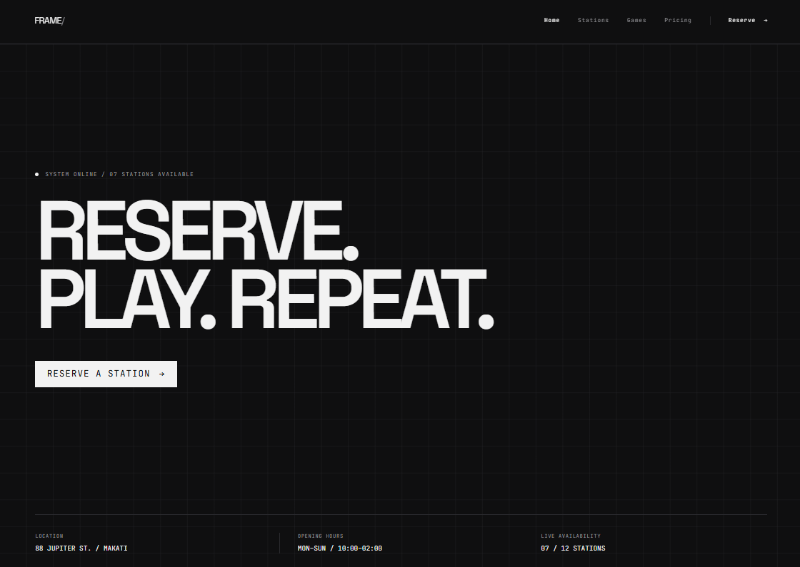

[ PROJECT_01 ]
Reservation System
A web app for booking time slots. The part I got stuck on was stopping two people from booking the same slot at once. Only one of them should be told it worked — the other should be told it was already taken.
[ View Code -> ]